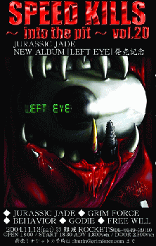

２００４．11.13難波ROCKETS
SPEED KILLS 〜into the pit〜 vol.20
With: GRIM FORCE //BEHAVIOR/FREE WILL/GODIE
 |
●ＪＵＲＡＳＳＩＣ ＪＡＤＥ’Ｓ setlists
Divided Power,Reverse
Left Eye On The TV
Found It Out
Fight For What For
ゴーグル・太陽・月
テロルの季節
赤い兆し
9月の詩
G.D.G
くたばりやがれ
精神病質（Seisin-Byo-Shitsu）〜Go To The Dogs〜The Individual D-Day〜Chaos
Queen〜ドクロ独白〜誰かが殺した日々〜僕らの狂気〜After Killing Mam
鏡よ鏡
ドク・ユメ・スペルマ
-Encore-
香港庭園
●ＭＥＭＢＥＲ’Ｓ comment
ＨＩＺＵＭＩ
ＮＯＢ
GEORGE
ＨＡＹＡ
●ＡＬＢＵＭ
| (C)BYS RECORDS |
●BBS comment
14日のDAY TRIP 投稿者：児玉浩 投稿日：11月 7日(日)18時07分47秒
楽しみにしてますね(#^O^#)
向かいのバリバリ屋で、玉せんと鶏ちゃん焼きを食してみては？
先日ROSE ROSEのなつき君が、昭和食堂の玉せんを食しましたが、大アサリは品切れで食せませんでした(>_<)そういや新譜まだ未聴ですいませんm(_ _)m
前日から名古屋入りするなら、岡崎CAMでVOIDDだで、遊びに行ってみてはどうですか(^O^)/
いよいよ 投稿者：GRIM FORCE 投稿日：11月11日(木)22時07分36秒
週末はよろしくお願いします！
11月13日(土)＠難波ROCKETS
SPEED KILLS 〜into the pit〜vol.20
JURASSIC JADE NEW ALBUM発売記念
出演
■JURASSIC JADE
■GRIM FORCE
■BEHAVIOR
■GODIE
■FREE WILL
open 18:00 / start 18:30
adv 1,800yen / door 2,300yen
JURASSIC JADEの演奏時間はタップリ1時間ありますので
皆さん是非遊びに来てください。
前売りチケットお取り置き賜ります。
お名前・必要枚数を明記の上churin@grimforce.comまでメールして下さい。
よろしくお願いします。
http://www.grimforce.com
オン ザ ロードです。 投稿者：NOB-JURASSIC JADE 投稿日：11月12日(金)14時43分5秒
渋滞・曇天・ISISで切なくなってる俺達ですが、明日は難波ロケッツ、明後日は名古屋鶴舞デイトリップを熱くします！見に来てください！JURASSIC JADEを。頑張ります！
椅子椅子？ 投稿者：藤井 投稿日：11月12日(金)20時22分19秒
EATMAGAZINE、買いました。このインタビューの内容は深いですね。なるほど〜〜と思いました。レコ評もみました。感じ方は人によっていろいろだな〜〜と思いましたね。
このインタビューの後がISISの特集でした。これ、イスイスって読むんですか？莫迦なので、教えてください。（汗）
大阪、名古屋におけるレコ発ライヴみたいな感じですね。今回は。頑張ってください！
ありがとうございました 投稿者：みうら＠office NO-REMORSE 投稿日：11月15日(月)15時05分55秒
名古屋主催させていただきましたバンドTシャツSHOP「NO-REMORSE」の三浦です。
１４日名古屋お疲れ様でした。出演していただきましてありがとうございました。
私個人的にスゴイ楽しみなメンツの組みあわせでした。
１２月２９日の名古屋でのLIVEを楽しみにしております
お疲れ様でした。またよろしくお願いします。
http://www.no-remorse.info
お疲れ様でした 投稿者：vio@skemaz 投稿日：11月15日(月)22時25分41秒
VIO SYSTEM DIVIDEスケマツです。土日と2日間お疲れ様でした。今回の名古屋ですが、なにか寄せ付けない威圧感を放っていました。それはなにか皆さんの”気”が自信に満ちている風にも見えました。
12/29また行きます！！
それではまたよろしくお願い致します。
http://artists.iuma.com/IUMA/Bands/VIO_SYSTEM_DIVIDE/
昨日はお疲れ様でした 投稿者：あつ 投稿日：11月15日(月)23時02分25秒
終電まで時間がなかったので終了後挨拶もできませんでした。
後半は首振りすぎて首が痛いです。アンコール２回もあって嬉しかったです。
今回は大丸に行ったのでしょうか(笑)
ぬ〜〜。 投稿者：藤井 投稿日：11月15日(月)23時26分16秒
アンコール2回？いいなぁ、名古屋のみなさん！！筑波はどうだろう。楽しみワクワク！！
お疲れです！ 投稿者：児玉浩 投稿日：11月16日(火)13時21分18秒
新譜もえ〜ね〜(>_<)
今じゃずいぶん音楽離れして、昔と比べたらめっきりCDを買わんくなったけど、買ってよかったです(#^O^#)
12月29日も楽しみにしてますねっ(^O^)/
12/29は 投稿者：藤井@帰りの地下鉄 投稿日：11月16日(火)18時15分47秒
ワシもホテルとったから、一緒に騒ごう。児玉くん！久々に買ったCDがJJの新譜じゃ、かなり良かったでしょう。また年末あいまひょ〜
遅れましたが・・・ 投稿者：naqro 栗須 投稿日：11月16日(火)19時11分10秒
日曜日のイベントお疲れ様でした。
ご一緒させていただいたnaqroのMCしない方のVoです。
皆さんにはほんと色々と衝撃を受けさせていただきました。
よろしければ相互リンクお願いします。
またご一緒出来る日を楽しみにしています。
http://www.geocities.jp/naqro_satoshi/naqro_web_site.html
ありがとうございました!!!!! 投稿者：NOB-JURASSIC JADE 投稿日：11月16日(火)21時14分23秒
名阪レコ発ツアー無事終了です。
沢山の方々にお世話になりました。ありがとうございました。
見てくださった方々、次回伺ったときも見てやってください。見逃した人は、次回伺った時是非！是非！ライブにお越し下さい。
＞みうら＠office NO-REMORSE 様
濃い企画でレコ発ライブをやらせてくださってありがとう！
個性的なバンドさん達と共演出来て、嬉しかった。
12月29日またお目にかかりましょう。
いつもTシャツ買えるの嬉しいです。今回も大満足！です。
＞vio@skemaz 様
バックアップありがとう！出来たら共演したかったけどね。
今度はこちらが、一緒にやるチャンス作ります。
コメントもありがとう。
JURASSIC JADEは今のってます。5人のメンバーで活動していた「あの時代」以来じゃないかなぁ？この感じ。
＞あつ 様
楽しんでもらえて良かった。案の定遅い終了時間。終電すれすれでしたよね。
静岡でのメドレーとは微妙に違ったはず。
写真ありがとう。近日中にUPさせてもらいます。
＞藤井 様
アンコール2回は驚きました。客出しのBGが流れても、だったので嬉しいです。
筑波で逢いましょう。
＞児玉浩 様
お疲れ様！打ち上げまで付き合ってくれてありがとう。
沢山の楽しい話に疲れも吹き飛んだよ。
CD買ってくれてありがとう。買って聞くって大事だよ。子供の頃さぁ、なけなしの金でかったLPレコード（！）限りなく繰り返し聞いたもんね。今でも歌える歌あるよ、その当時の洋楽で。
年末のイヴェントで逢えるのを楽しみにしてます。
＞naqro 栗須 様
書き込みありがとうございます。
naqroの楽しいステージングに大いに刺激受けて、俺たちも頑張れましたよ。
また、ご一緒したいです。メンバーの皆さんによろしくです。
リンク了解です。近日中に。
遅くなりましたが 投稿者：ちゅうりん＠GRIM FORCE 投稿日：11月16日(火)21時29分50秒
13日はお疲れ様でした！
いつ何処でどんな状況で見ても変らぬ熱いライブをありがとうございました。
打ち上げモツに行けなかったのは残念でなりませんが、また今後ともよろしくお願いします。
いま我々は完全な状態ではありませんが、必ず100％の状態にしてみせます！
＞HIZUMIさん
個人的に打ち上げの最後に色々お話をして頂きありがとうございました。
凄く心深くに響きました。
HIZUMIさんから頂いた言葉を胸に刻み、もっともっと大きく成長してみせます！
http://www.grimforce.com/
イケイケ（死語）ですね！ 投稿者：藤井 投稿日：11月17日(水)07時33分14秒
＞JURASSIC JADEは今のってます。5人のメンバーで活動していた「あの時代」以来じゃないかなぁ？この感じ。
いいですね！いや、あの時以上だと当時のライヴを見ている老人は申します。昨日、DISC UNIONに行ったら、会社の先輩が来ていたから、「これ、買ってください！」とか言ってしまいました。（笑）しかし、売れているようです！棚じゃなくて、下に平積みになっているのですが、2枚だけになってました。
遅ばせながら 投稿者：shiho@FE//hammer 投稿日：11月17日(水)14時15分30秒
１４日、名古屋DAY TRIPでご一緒した、FUNERAL ELEGYの♀ドラムです。
お疲れさまでした＆とても楽しかったです。やはりライヴは楽しいです。わくわくします。
JURASSIC JADEさんのライヴは名古屋以外でも幾度か拝見して、打ち上げでもお会いしてるの
ですが、まともにお話したのは、ほぼ初めてでした。
夏のSABBAT,RAGING FURYに続き、私がライヴハウスに通うようになったキッカケのバンドさんと
今年立て続けに共演出来たのが感無量で、思い返してみると奇跡かなぁって・・。
日々、数々のバンドが産まれては消えていく中、去年、今年、来年と３年立て続けで国内の大きな
ＨＭバンドさんが２０周年を迎えるのはとても素晴らしい事だと思います。
来年はやはり紅白出場ですかねえ・・！？。
久々カキコ 投稿者：jjcrew 投稿日：11月18日(木)00時25分47秒
＞大阪・名古屋でお世話になった全ての皆様
どうもお疲れ様でした＆ありがとうございました！
色々と学ぶこと・考えさせられることの多かった２日間、強行スケジュールで同行させてもらった甲斐がありました。年末もまたヨロシクお願いします。
BACK TO